Rhythm Cells
• There are only 12 rhythmic shapes used in western sheet music.
• Eight 4-count rhythmic shapes.
• Four 3-count rhythmic shapes.
-These are also used for 'triplet' figures.
• Combine these 12 shapes with rests and ties to create any rhythm!.
Note Values
| Note | Rest | Name | Value |
|---|---|---|---|
| Whole | 4 Beats | ||
| Half | 2 Beats | ||
| Quarter | 1 Beat | ||
| Eighth | 2 per Beat | ||
| Sixteenth | 4 per Beat |
These notes are named after how they function in 4-4 time
Definitions
| Tie | Combines two rhythm cells together | |
| Note | A distinct musical sound | |
| Rest | A note of musical silence | |
| Dot | An augmentation dot. Increases the value by 1/2 | |
| Staccato | An diminution dot. Shortens the duration of a note | |
| 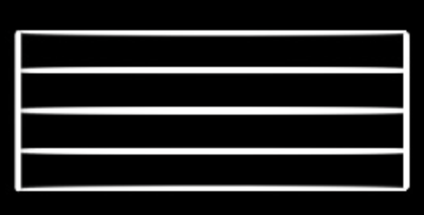 | Measure; Bar | A unit of musical time that always starts on count '1' |
Time Signatures
Time Signature: How many notes of which value fill a measure.
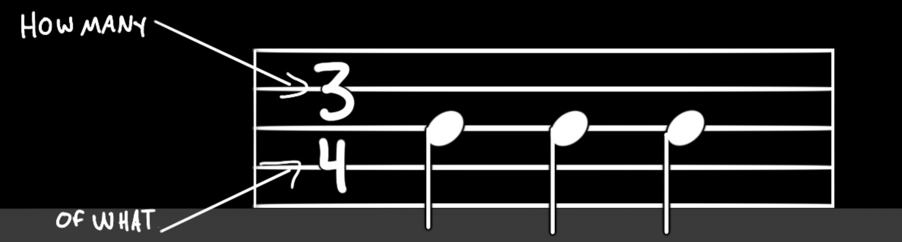 3-4 time is saying three 'quarter-notes' fill one measure.
some other common time signatures: 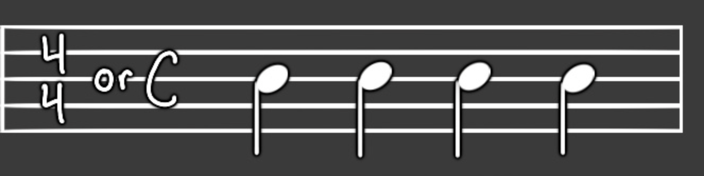 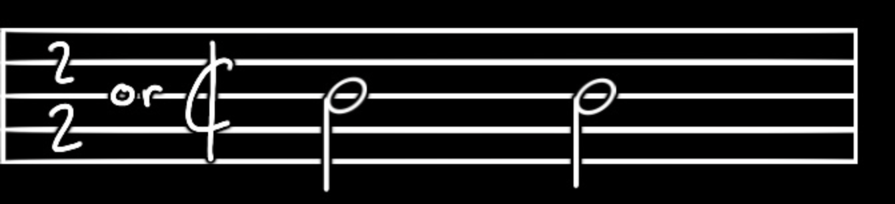 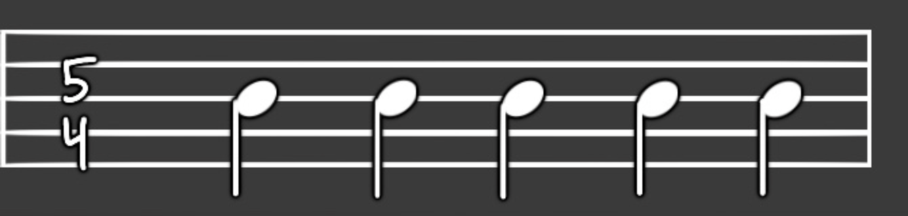 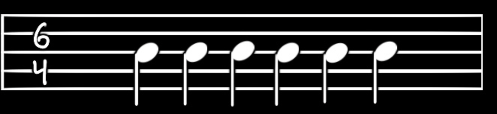 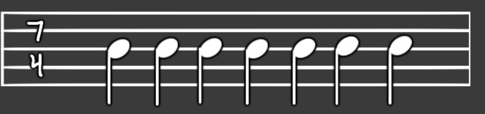 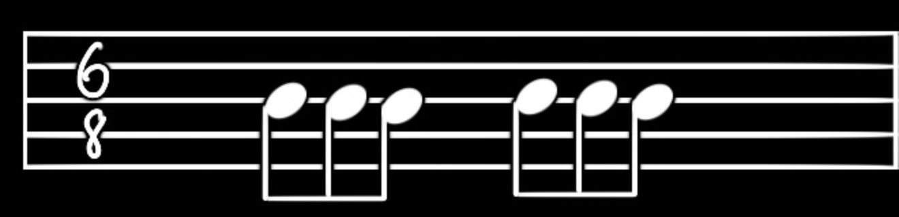
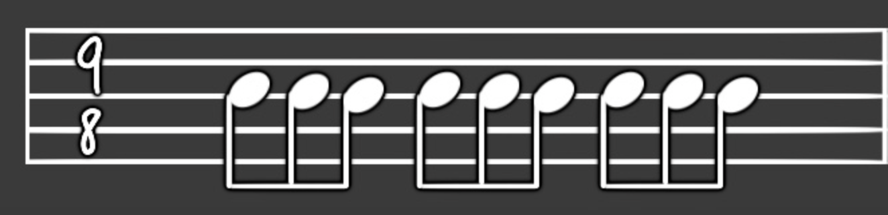
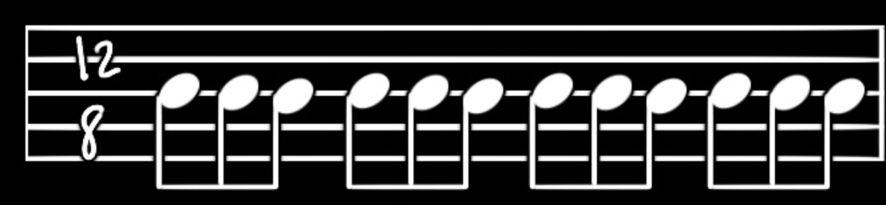
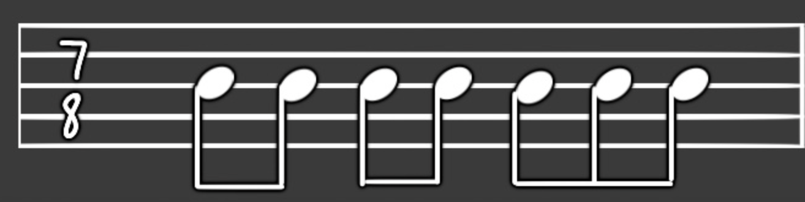
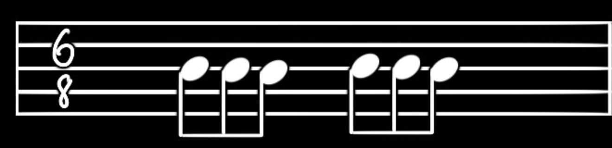
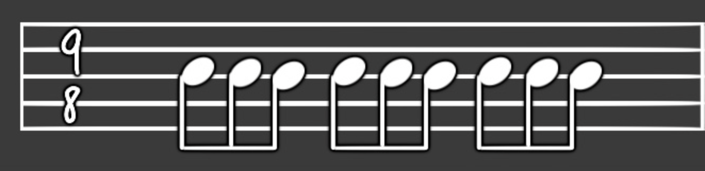
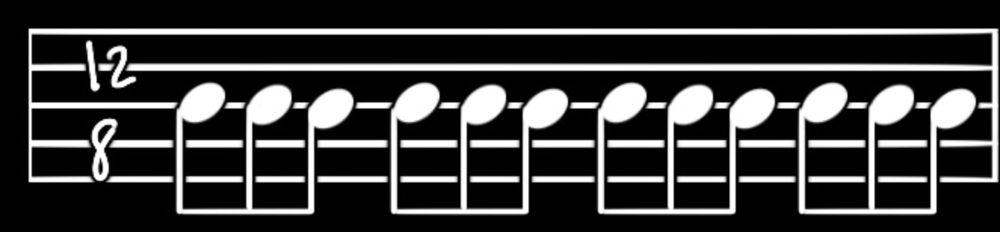
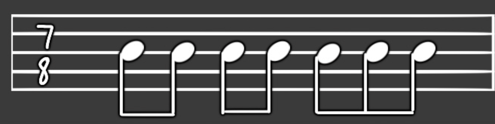
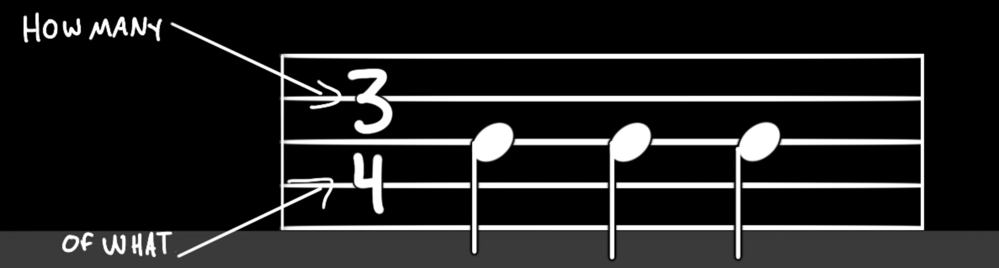 3-4 time is saying three 'quarter-notes' fill one measure.
some other common time signatures: 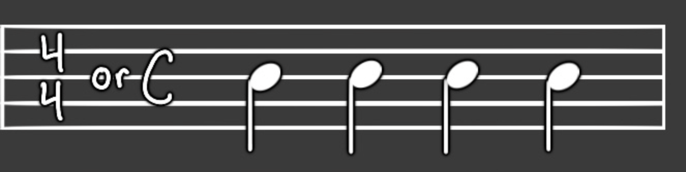 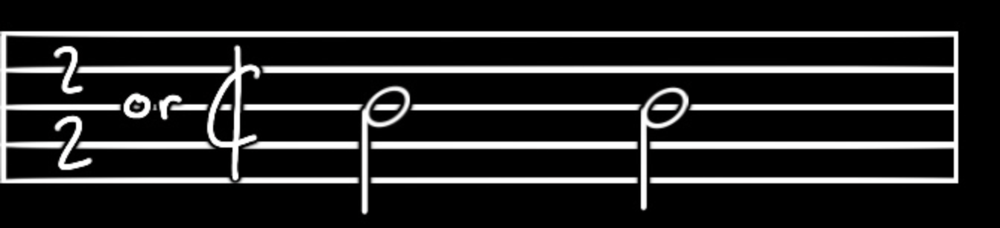 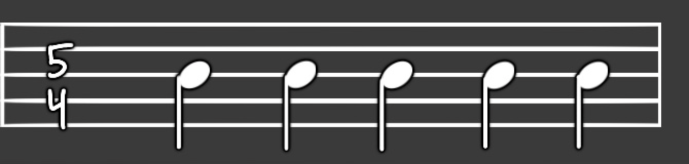 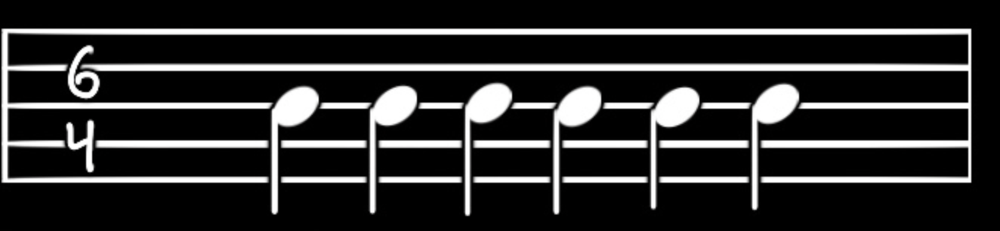 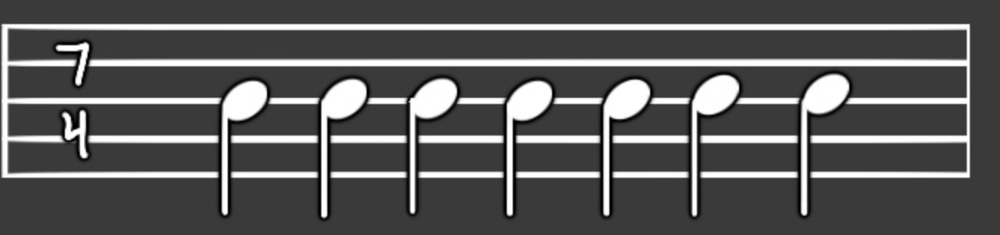
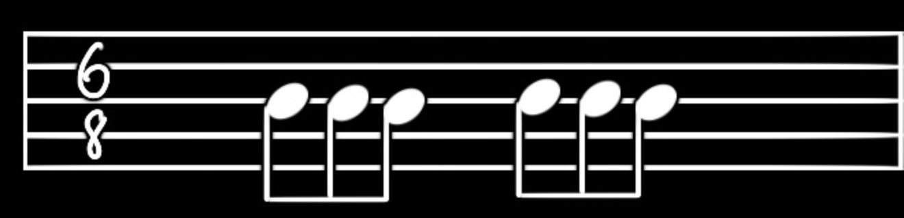
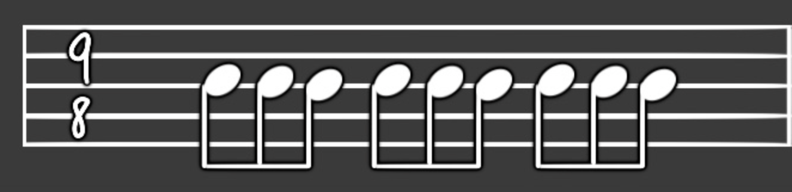
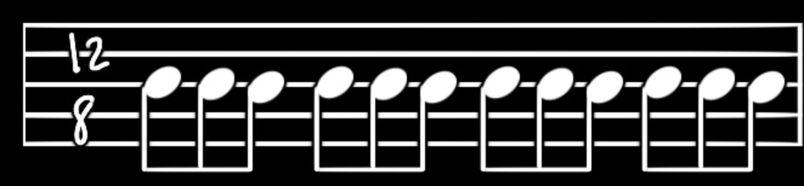
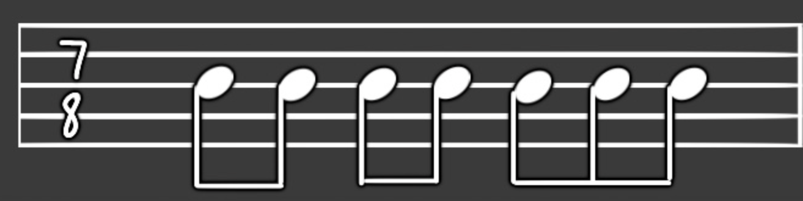